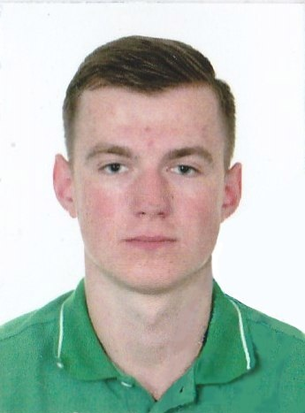

Резюме
Трохименко Александр Игоревич

Информационная таблица
| Дата рождения |
31.08.1994 |
| Город |
Киев |
| Моб.тел. |
+380932657784 |
| Email |
tr_alexander@ukr.net |
Цель:
- Пройти курсы повышения квалификации и получить должность стажера в компании работающей в сфере IT.
Oбразование:
- Диплом младшего специалиста с отличием
- Сентябрь 2010 г. – июнь 2014 г. окончил Промышленно-экономический колледж Национального авиационного университета по специальности «Разработка программного обеспечения» и получил квалификацию техник-программист.
- Неоконченное высшее. 3 курс – очная форма обучения на бюджетной основе.
- Сентябрь 2014 г. – июнь 2017 г. – Национальный авиационный университет, институт информационно-диагностических систем, специальность: «Управление информационной безопасностью»
- Сентябрь 2015 г. – июнь 2017 г. – Кафедра военной подготовки Национального авиационного университета, специальность: «Эксплуатация и ремонт авиационного вооружения» ( командир взвода).
Профессиональные навыки:
- Уверенный пользователь ПК: MS Office, PowerPoint, Adobe Photoshop, Visio, почтовые клиенты, умение работать с базами данных, установка и поддержка линейки ОС Windows, установка драйверов и утилитов для ОС Windows.
- Свободно выполняю поставленные задачи связанные с компьютерной техникой на программном уровне. Имею теоретические знания касательно аппаратной части компьютера.
- Опыт программирования на языках высокого уровня.(С++,С#)
- Опыт подготовки и проведения конференций.
- Навыки создания презентаций.
- Владение языками: украинский - родной; русский – свободно; английский – базовый (разговорный, письменный).
Личные качества:
- Целеустремленный, всегда довожу дело до конца.
- Коммуникабельный, нравится общение с людьми и новые знакомства.
- Ответственный и пунктуальный.
- Благодаря изучению информационных технологий привил себе способность к быстрому обучению.
- Благодаря военной кафедре начал развивать в себе качества лидера.
- Имею огромное желание развиваться, работать и зарабатывать!
Дополнительные сведения:
- Семейное положение: не женат
- Дети: нет
- Водительское удостоверение: есть (категория B)
- Личный автомобиль: да
- Вредных привычек не имею.